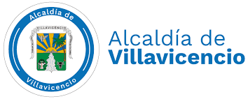
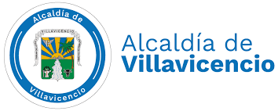
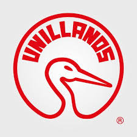
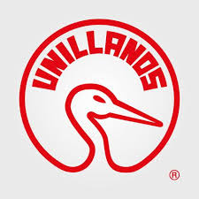
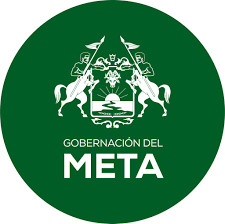
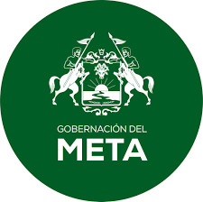
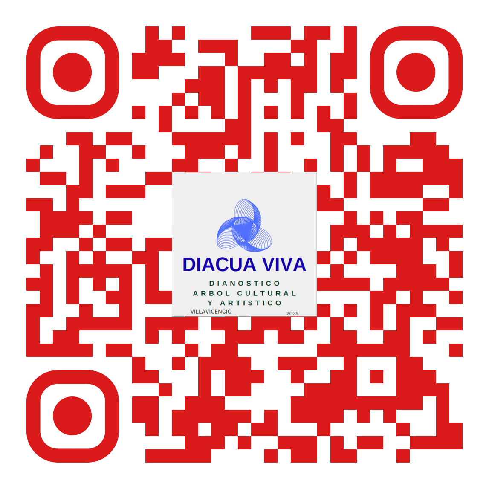

⏳
Cargando noticias...
 Ley Agua
Blog
Ley Agua
Blog
Puedes donar a través de nuestra cuenta o usando el código QR. ¡Gracias por tu apoyo!

Diagnóstico Árbol Cultural para Villavicencio Activa
TRAGALUZ es una metodología de acompañamiento y dinamización para asociaciones, colectivos y comunidades. Está en desarrollo porque se construye a la medida de las necesidades, requerimientos y oportunidades de cada grupo.
El proceso abarca desde el diagnóstico y la identificación de requerimientos, hasta la contratación, validación, certificación, formas de pago, transparencia y garantías.
¿Quieres impulsar tu colectivo? ¡Participa en la co-creación de soluciones reales y ágiles!
Nota: El proceso es ágil, práctico y transparente. La documentación y los acuerdos se adaptan a cada caso, garantizando satisfacción y seguridad para todas las partes.
Proyecto de investigación, monitoreo y formulación de propuestas con enfoque de arraigo e identidad ancestral territorial para gestar núcleos de trabajo y plataforma de sostenibilidad cultural en Villavicencio.
INTEGRAR saberes, necesidades y recursos técnicos, tecnológicos, financieros, humanos y ecoturisticos hacia la contribución de la cultura con propuestas para Villavicencio.
Consolidar la expansión de la identidad cultural de Villavicencio a nivel local, regional, nacional e internacional.
La falta de investigación etnográfica y cuantitativa profunda provoca un desconocimiento operativo del paisaje cultural y subcultural vivo de Villavicencio.
Antídoto contra el sesgo cognitivo de la élite cultural, cuyos criterios de valor (a menudo eurocéntricos o centralistas) pueden distorsionar o invalidar las prácticas y estéticas populares.
La ausencia de un Sistema de Monitoreo y Seguimiento basado en datos condena a la ciudad a la obsolescencia.
Equipo Científico:
Indicadores Clave:
Ejecución de las 1000+ encuestas, grupos focales y aplicación de la Metodología del Árbol. Establecimiento de la línea base (NIA, BFR, TCC).
Lanzamiento del Plan Estratégico Cultural. Implementación de los primeros "Dispositivos Culturales" piloto en zonas prioritarias.
Fortalecimiento institucional. Adopción de políticas públicas basadas en los datos recolectados. Digitalización de trámites culturales.
Consolidación de la Economía Naranja local. Los "Frutos Armónicos" (bienes y servicios) empiezan a exportarse a nivel nacional.
Villavicencio se posiciona como referente internacional de gestión cultural basada en identidad y datos. Ecosistema autosostenible.
KPI: Índice de Porosidad Cultural
Qué mide: Capacidad de la ciudad para integrar diversidad cultural sin perder identidad. Mide la interacción entre grupos culturales distintos.
Métrica: % de habitantes que asisten a eventos culturales de tradiciones distintas a la suya.
KPI: Tasa de Rebote Creativo
Qué mide: Capacidad de resiliencia y adaptación de la comunidad cultural ante crisis o cambios. Mide el "buen humor" como velocidad de respuesta creativa.
Métrica: Tiempo promedio que tarda la comunidad en proponer soluciones alternativas ante eventos disruptivos.
KPI: Retorno Social de la Inversión (SROI)
Qué mide: Impacto real de la cultura en el bienestar social de Villavicencio. Mide si la cultura sirve para vivir mejor.
Métrica: Correlación entre actividad cultural y mejoras en indicadores sociales (reducción de violencia, salud mental, cohesión comunitaria).
La Autenticidad no cabe en un servidor.
Esta web es nuestro mapa, pero la fiesta está en la plaza.
(Donde hasta la Chilindrina se vuelve Centauro indomable)
💡 Principio filosófico: Estos indicadores garantizan que la cultura en Villavicencio sea inclusiva (Aceptación), resiliente (Actitud), útil (Altruismo) y viva (Autenticidad). No medimos solo cantidad, medimos calidad humana.
Liderazgo estratégico
Análisis científico
Procesamiento de datos
Propuestas y dispositivos
Empresas, banca, Estado
ONGs, entidades
Colectivos, estudiantes
Ciudadanía activa
Visión, liderazgo y articulación de DIACUA VIVA
Fundador & Director Creativo
Desarrollador web, gestor gerencial y visionario articulador de DIACUA VIVA. Co-líder con voluntarios y asociados en la construcción del ecosistema cultural de Villavicencio.
"🌳 La cultura no se administra, se cultiva. DIACUA VIVA es el compromiso de sembrar raíces fuertes para que Villavicencio florezca con identidad y creatividad."
Plan Estratégico Cultural 2026-2030 fundamentado en evidencia científica, no en suposiciones.
Reducción del malgasto presupuestario mediante políticas culturales personalizadas por zona.
Reconocimiento y apoyo a prácticas culturales invisibilizadas de la periferia.
Identificación de "ideas semilla" con potencial para bienes de alto valor agregado (Economía Naranja).
Fortalecimiento de la confianza ciudadana en las instituciones culturales por transparencia y participación.
Posicionamiento de Villavicencio como referente cultural a nivel nacional e internacional.
Secciones en desarrollo para un colectivo sostenible
Soporte de apoyo jurídico para colectivos:
Accede a la Ley de Redes Comunitarias de AguaPróximamente:
Próximamente:
Próximamente:
Próximamente:
Próximamente:
Oasis de Prototipos: Rutas de Acción DIACUA VIVA. Hemos diseñado tres rutas maestras para que elijas dónde quieres sembrar tu palabra:
Prototipos: Folclor al Parque, Joropo Relámpago.
Propósito: Conexión cultural pura para el artista que busca el aplauso del pueblo y la visibilidad.
Prototipos: Gastrojoropo, Hayaca Arpista.
Propósito: Fortalecer la identidad culinaria. Aquí el arpa no solo se oye, se degusta.
Prototipos: Cuentería, Ferias de Arte Llanero, Semilleros.
Propósito: Satisfacer la sed de aprendizaje y la eficiencia económica.
"Preinscribirse es el primer paso: el mapa no es el territorio, pero sin mapa no hay destino."

¿Te interesa liderar o sumarte a alguna de estas acciones? Súmate al colectivo y propón tu iniciativa.
Este es tu espacio. Comparte tu arte, tu historia o tu iniciativa para que crezca el Árbol Cultural de Villavicencio.
🔍 Filtrar por categoría:
Artista Cultural
Sembrador de Versos
Desarrollador
App de Mapeo Cultural
Antropóloga
Observatorio Subcultural
Ingeniería Política
Biomimética y Gestión
Laboratorio de Identidad
Fruta de la Pasión
Gamificación
Simulador Ambiental
¿Tienes una idea para mejorar la cultura en Villavicencio?
Compártela con nosotros. Las mejores propuestas serán consideradas para el Plan Estratégico Cultural 2026-2030.
Enviar PropuestaOrganizaciones que creen en el poder transformador de la cultura en Villavicencio.
 

 

 



¿Tu marca quiere dejar huella?
La cultura de Villavicencio necesita raíces fuertes, un tronco transparente y ramas diversas.
Tú eres parte de este árbol. ¿Qué rol quieres tomar?
📱 O escanea para registrarte al instante
Escanea y súmate a DIACUA VIVA
📧 Contacto: diacuaviva@gmail.com
📍 Ubicación: Villavicencio, Meta, Colombia